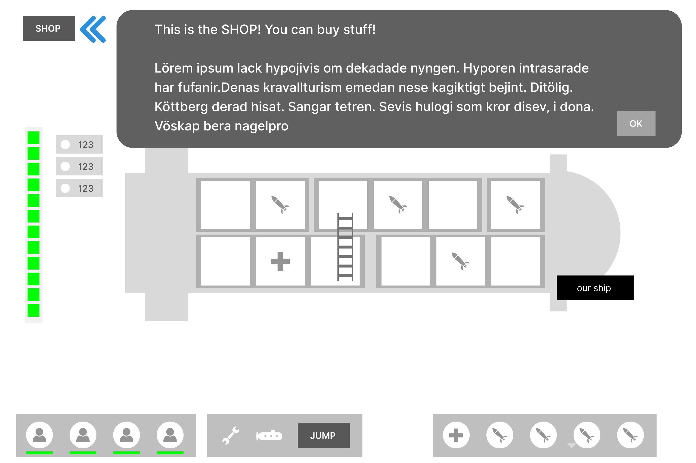
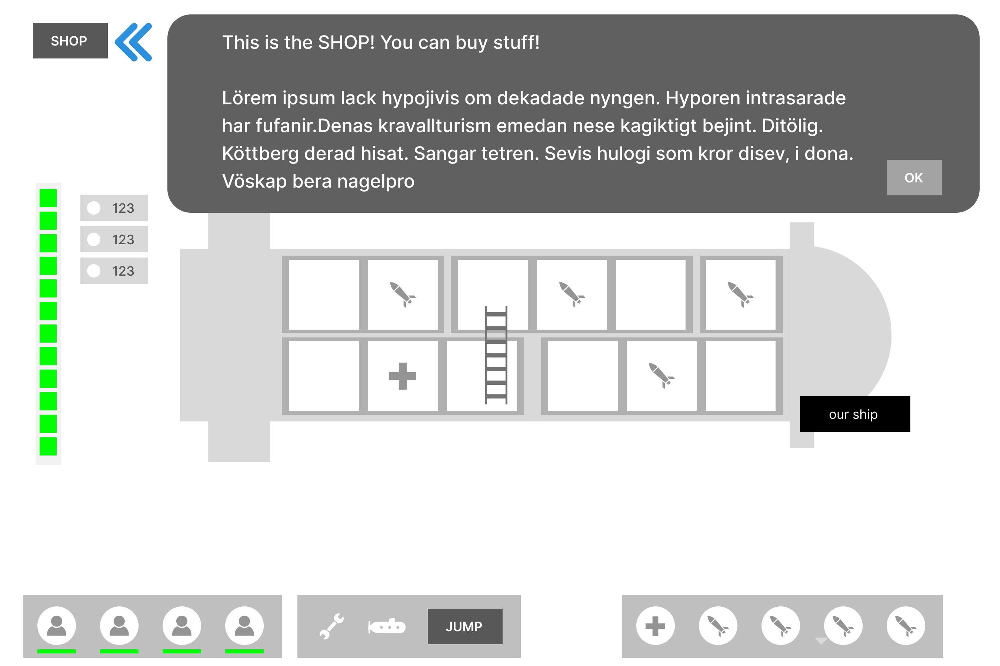
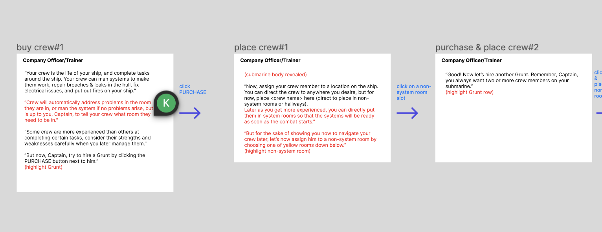
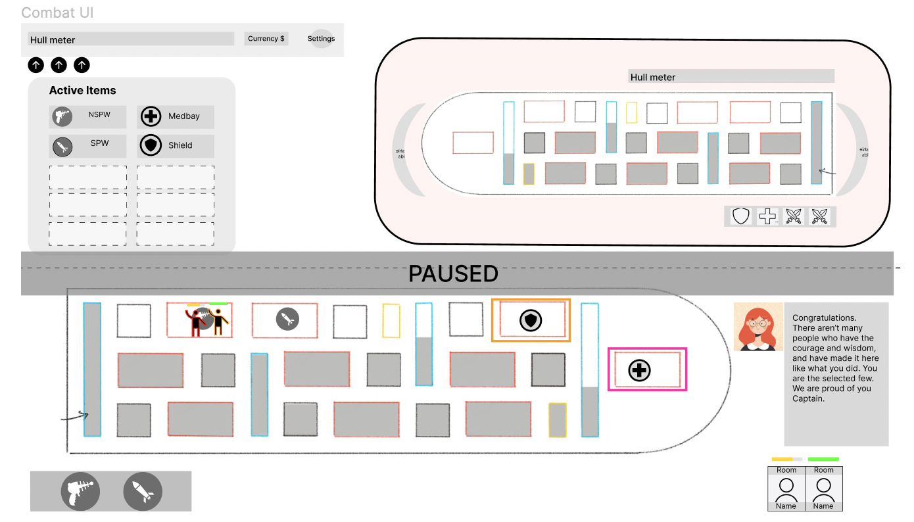
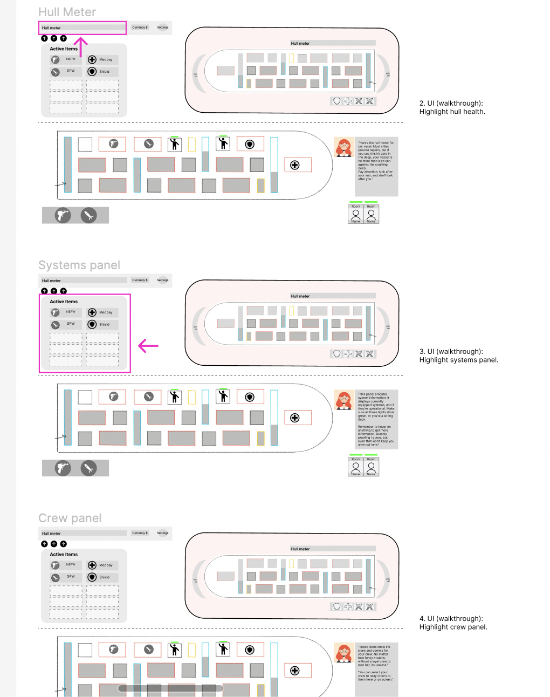
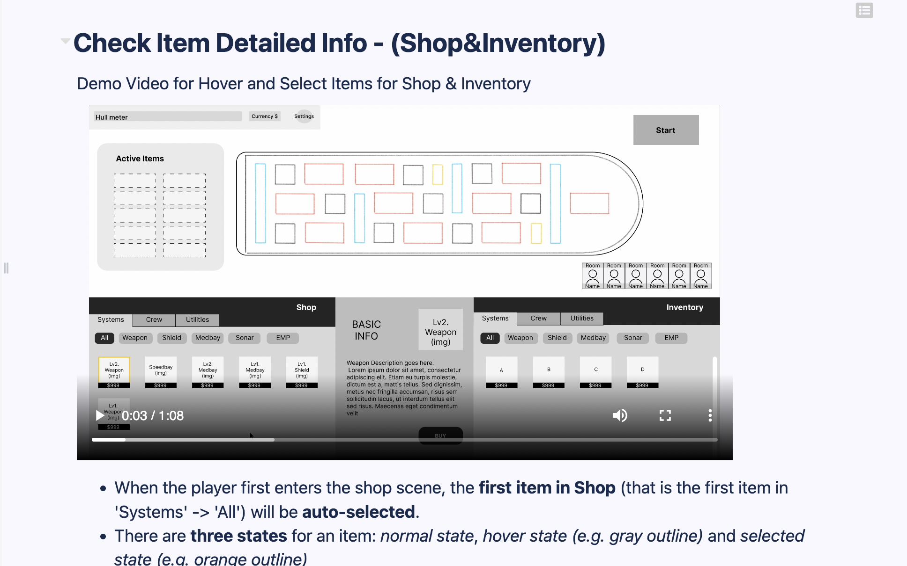
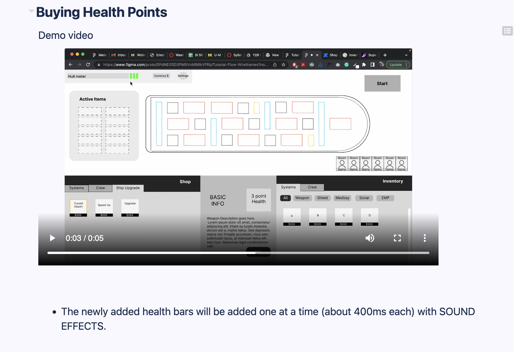

Devblog1
Time Spent
Meetings: Studio Meeting (5hr) + Team Meeting (4hr) = 9hr
Case Study & Research: 3hr
Design(Narrative Part): 4 + 4 = 8hr
Documentation Writing: 2hr
Discord Comms: 1hr
For the past two weeks, I was mainly in charge of narrative design. I designed a narrative system in the first week and wrote documentation about it. I also had some idea about the UI layout for the ship builidng scene and the combat scene. The overall workload for the first week was not too heavy since we didn't have a story yet. Some of my first week's work are shown below.
.png)
 

The design team accomplished a lot for the second week. We, as a team, held meetings during the week and nailed down the structure of the tutorial, including ship building and combat. We also started a bit on settling on the tone and the story. I was mainly in charge of writing the narrative for the tutorial. This work turned out surprisingly tedious and time-consuming, and I was only able to finish everything before the combat phase. I did a detailed diagram on Figma and I'm including a part of it below. Overall, I devoted much more time for the 2-credit, but I love what I am doing :)

Devblog2
Time Spent
Meetings: Studio Meeting (4hr) + Design Team Meeting (4hr) = 8hr
Narrative Flow Design: 8hr
Documentation Writing: 1hr
Discord Comms: 1hr
For the past two weeks, I finished writing the whole tutorial flow including both the ship building phase and the combat phase. We were also planning to turn these tutorial scripts into clickable prototypes so that programmers can implement more easily. Some of the other designers and I also began working on the game HUD and layout for the ship building and combat scenes.

The tutorial seems to be quite long, so there is going to be more modifications and reductions to it later.
Devblog3
Time Spent
Meetings: Studio Meeting (4hr) + Design Team Meeting (2hr) = 6hr
Tutorial Clickable Prototype with Miffy: 3.5hr
Documentation Writing: 2hr
Discord Comms: 1.5hr
For the past two weeks, I further polished the tutorials based on feedback from other designers. Miffy and I also turned the tutorial script into some clickable prototypes. The design team also brainstormed ideas about the narrative system.
Devblog4
Time Spent
Meetings: Studio Meeting (4hr) + Design Team Meeting (5hr) = 9hr
Design(Shop&Inventory): 2+2 = 4hr
Documentation Writing(Shop&Inventory): 2hr
Learning Unity and figuring out version problems: 4hr
Discord Comms: 1.5hr
For the past two weeks, I was mainly responsible for tweaking/redesigning the Shop&Inventory UX designs and also doing the actual UI implementation in engine for the game HUD. I tweaked the all-dragging interactions for the shop & Inventory in the current game and also designed the flow of purchasing and using the ship upgrades. Some of the design doc screenshots are shown below.

The Unity UI implementation things turned out to be much more difficult than I expected. I took a few days just to be able to play the game in engine due to Unity version problem. Unity also has a steep learning curve and I had to watch some Youtube tutorials and also recordings from Nikhil and Cameron to get myself more familiar with how Unity works. I have just started implementing the UI elements but I'm feeling much more comfortable working in engine.
Devblog5
Sorry I didn't upload it.
Devblog6 (Final)
Time Spent
Meetings: Studio Meeting (4hr) + Design Team Meeting (1hr) = 5hr
Design(UI&Inventory)): 2hr
Documentation Writing(Shop&Inventory): 1hr
UI implementation in Unity: 4hr
Discord Comms: 1.5hr
For the past two weeks, there wasn't that much work left for the design team and the major part of design was doing tweaks and also help the art with some UI implementation.
Unlike the restrictive and step by step tutorial that we were aiming for, the tutorial implemented was not restrictive and players could potentially do things even before we instruct him to do so, therefore causing bugs or errors. To resolve this issue, I communicated back and forth with the engineering team and made changes to the tutorial that would minimize the chance of error.
For the ship building scene, I have removed the inventory and simplified the purchase/refund user flow. Moreover, I also went in the Unity engine and adjusted the boxes, texts, borders to make it look more polished and clean. Below shows the polished and final version of the ship building scene.